Here is an example of Double Sided, Right Page as the first (also happens to be two-column). If you print these on a local printer, they will print as individual pages.
Under the File heading on the menu bar, you will find two related entries, Document Setup and Preferences. Each of these brings up a dialog used for changing various default settings and other behavior in Scribus:
There have been some signficant rearrangements of the dialogs for 1.5.0 – most settings are the same, but we now see a number of sub-tabs in the various categories.
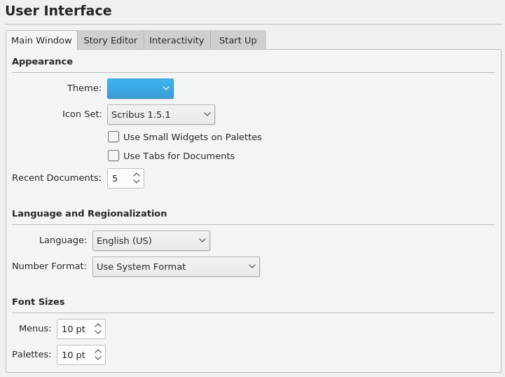
You may have started up Scribus in a particular Language – here we expect to see the system default language, but you can override that setting, which will remain on future startups until you change again.
The Theme will be whatever your main system theme is when none is selected, but otherwise your choices depend on your operating system or desktop environment and its available themes (if any). You can also change the size of the font used in the user interface. The various other settings are straightforward, and experimentation will be your guide.
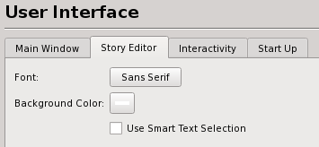
These settings were previously only found in the Story Editor dialog, but now are also here.
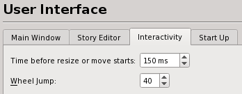
These are mouse settings – Time before resize or move starts allows for a slight delay between when you click and the operation happens, to avoid unintended moves.
Wheel jump relates to the number of pixels for each "notch" of the wheel.
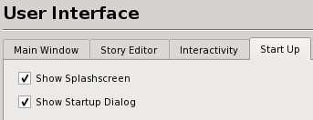
As shown, these default startup behaviors are optional.
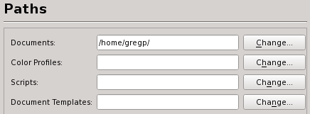
The various “paths” are the default locations Scribus will use. The path for scripts is where Scribus looks when you choose Scripts > Execute Script from the menu bar.
In Preferences, the various settings here will be those that you see when you create a new document (File > New). With File > Document Setup, they will change the current document.
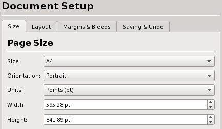
The Page Size section should be easily understandable, with a large selection of standard sizes to choose from, in addition to Custom.
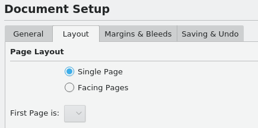
The Page Layout choices have been the source of confusion for some. These simply apply to the relative placement of pages on your screen, and each will have the size as indicated, not some subdivision of it. Double Sided would typically be chosen for a book-like layout, and thus the First Page selector at the bottom allows the initial page to be Right or Left. This helps you use the appropriate Master Page layout.
Here is an example of Double Sided, Right Page as the first (also happens to be two-column). If you print these on a local printer, they will print as individual pages. |
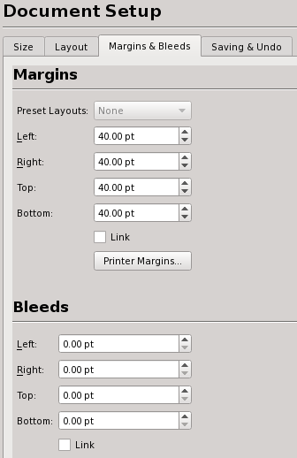
Preset Layouts will be available for anything other than Single Page layout. What these represent are some time-honored ways to set the margins of the page, many based on some mathematical approach related to the dimensions of the page. Below we see the contrast of these various methods – these are all right pages of a double-sided layout.
 Gutenberg |  Magazine |  Fibonacci |  Golden Mean |  Nine Parts |
Bleeds are an extra space at the outer edges of your page which are intended to be trimmed off after printing. The bleed area can include registration marks, a color palette, and trim marks, in addition to allowing a graphic to spill into this space so that it fills the post-trimming page completely to the edge of the paper.
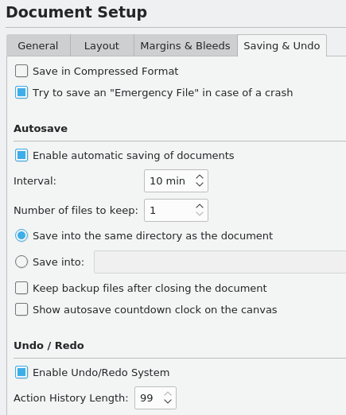
Save in a compressed format uses the utility gzip to make a compression of your file to save space. Rather than your Scribus files ending in .sla, they will end with .sla.gz instead.
The other settings here should be self-explanatory.

You may have noticed that even though it was said above that you have a large selection, when you actually first check your selection, it's rather puny. This new category in Preferences explains why. Rather than needing to deal with this entire list in the drop down menu, here you can only show sizes which there is some likelihood that you will need, and you can add as many as you want.
Although labeled Guides, there are many other settings here, mostly related.
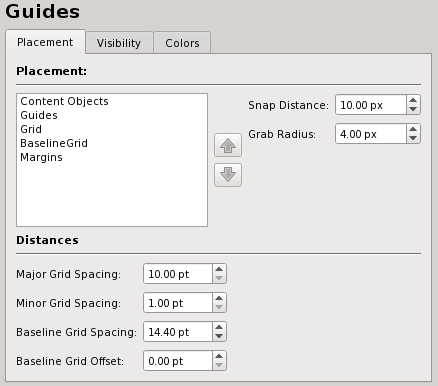
The meaning of the box in the upper left is to depict the order of visibility of each kind of item. Here in the default situation, Content Objects show on top, then Guides will appear to be just under them, then the Grid, the Baseline Grid, and finally underneath everything, the Margins. To change this order, click to select one of these, then use the arrows to move it upward or downward in the stack.
The Snap Distance applies when Page > Snap to Guides or Page > Snap to Grid has been selected. Grab Radius has to do with the size of the virtual space for grabbing and dragging a frame’s handles.
At the bottom, you can adjust the spacing of the Grid and tne Baseline Grid.
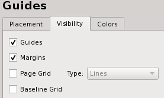
By default, Guides and Margins will show, and the Grid and Baseline Grid will not, but each default setting can be changed here.
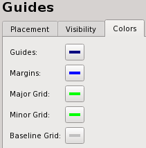
For adjusting the color of each item.
| 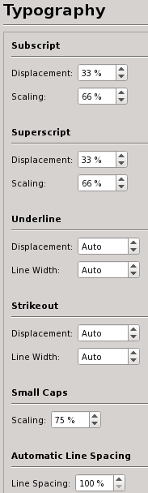 | Here are the default settings for various typographic features – subscript, superscript, automatic line spacing and scaling of small capitals. In addition, the amount of automatic linespacing can be adjusted relative to the size of the font. |
In the Item Tools tabs you can change the defaults for text frames, image frames, shapes, polygons, lines, calligraphic lines, arcs, and spirals. Remember, these are simply the default settings, and can still be altered as needed on the main canvas.
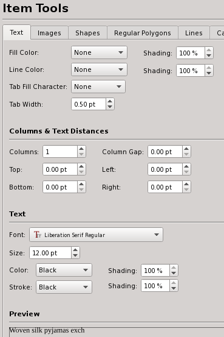 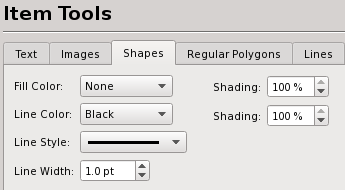 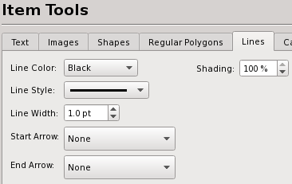 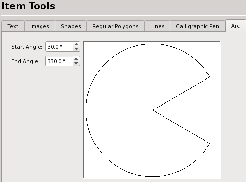 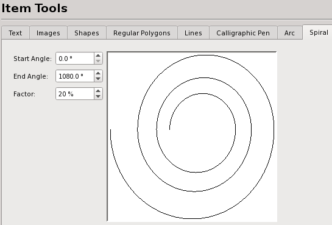 |
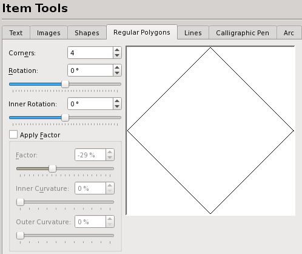 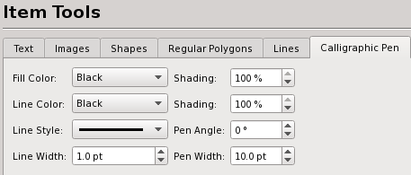 |
In 1.5.0, these have been pulled out into their own category.
| 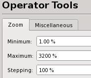 | 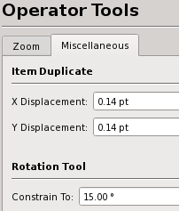 |
The default for the Minimum setting can be as low as 1%, while Maximum can go no higher than 3200%. Stepping is shown as a percentage, which only makes sense if you are going to a higher magnification. In contrast to 1.4.x versions, and at least in an upward direction, this is more of a true stepping procedure, so that the magnification jumps in an additive way with this setting. Therefore, starting at 100%, we then jump to 200%, 300%, 400%, and so on. Going downward, it's trickier to explain, but at this setting of 100%, the jumps would be 100%, 50%, 25%, 12.5% and so on. |
Here we have the settings for the amount of shift with the copy when you click Item > Duplicate from the menu. In addition, here is the amount of jump with each click of the rotation tool. |
Hyphenation details are described here: Hyphenation in Scribus.
Selecting and installing fonts correctly is one of the most important configuration items with Scribus, and an extensive set of notes is here: Fonts and Scribus. If there is one part of the documentation you really must read, it is this one.
See the information about Printing Tools to learn more about the configuration options in this panel.
There are detailed notes on this topic in the Color Management section. Most of these options will not be available unless Activate Color Management is checked. Also, setting the monitor profile is only possible when no document is open.
Note: You will not be able to export to PDF/X-3 if color management is not enabled, and the Preferences settings for this format will likewise not be available.
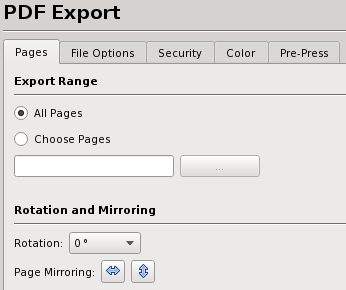 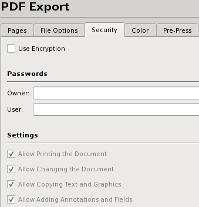 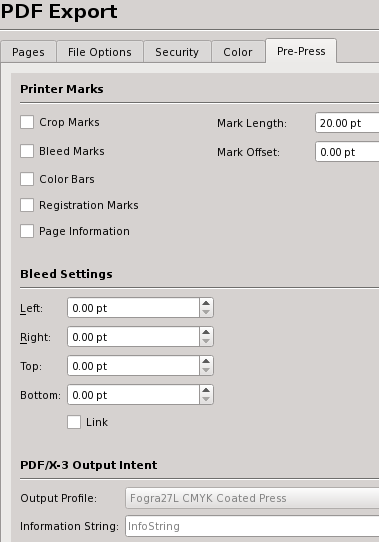 |
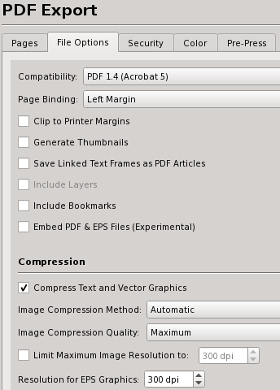 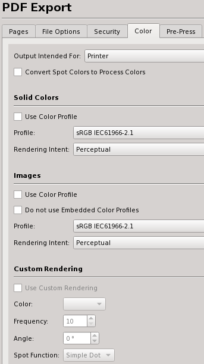 |
Remember that the settings here simply change the default values for PDF Export. You can still override any settings with the PDF Export dialog. For more info on PDF look at PDF Export Options and PDF/X-3 and Scribus.
Aside from storing additional information about a given item, this feature is currently most useful in connection with the creation of a table of contents.
These two subdialogs relate to each other. One use of these features is explained here: http://wiki.scribus.net/index.php/Creating_a_Table_of_Contents
| 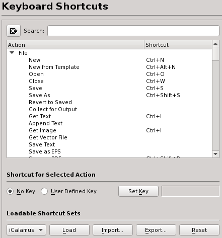 |
Here you see the various default keyboard shortcuts, which are editable, and many others can be assigned. Moreover, once customized, you can export them into a separate XML file that can be exported and saved separately, along with making it portable to other machines. The default file suffix is .ksxml. This is a Unicode file and should not have issues being transported across platforms, with the only caveat that Macs have an option and command meta key, where Linux, UNIX, OS/2, eComStation and Windows share common keyboards.
With Scrapbooks, you can right button drag and drop frequently used items, including pictures, images and text files for quick placement. Scrapbooks can be saved with a file or independently of a document, as a separate Scrapbook which can be loaded use with many different Documents. Separate Scrapbooks are kept with a .scs designation. This panel sets the defaults for the thumbnail preview size of items in the Scrapbook palette and whether Scrapbooks should be saved automatically when changed.
Most of these are pretty straightforward. Depending on the size of your screen, you can use this to adjust the rescale and rearrange your workspace. If you have plenty of space, you may want to adjust the display to accurately reflect your document size by default. Display Scaling can only be adjusted with no document open. Remember, you can adjust the magnification settings in Operator Tools > Zoom.

The Colors tab allows for customization of the colors used for various screen features, such as marking the margins, grids, and guides. In Document Settings only Fill Color is available. It’s also worth mentioning here that the Fill Color only has to do with the appearance of the document background and is not printed or exported to PDF.
This panel enables you to change the default settings for the location of Ghostscript and other external programs. If you have installed Ghostscript before installing Scribus, it is usually detected automatically. If you receive an error message indicating that EPS files cannot be used, this is where the settings can be changed to allow Scribus to find the correct location of Ghostscript.
Linux, UNIX, OS/2, eComStation, Haiku and Windows:
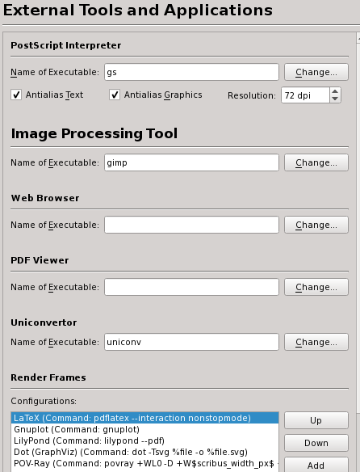This particular screenshot comes from Linux and is also applicable to other UNIX systems. See the Haiku, OS/2 and eComStation and Windows specific information for these operating systems. Some additional information about Ghostscript can be found in Advanced Ghostscript.
Mac OS X
 |
Above are the recommended settings, provided you have correctly installed the Ghostscript framework.
Image Processing Tool
You are not restricted to using GIMP for image editing, and could use any available image editor such as Krita, or even Photoshop. However, GIMP is set as the default application, as it’s the most popular Open Source image editing software.
Web Browser
Here you can set the path to the executable file of the browser that will be used if you click an external link in the Help Browser or select an external source from the Help menu.
Render Frames
See Working with Render Frames.
 |
This is an informational display about the various plug-ins you have at your disposal, how to use them, and where their libraries are located.

Here is a new feature, allowing you to set up an image cache for faster loading of images on screen rewrites.

Short Words is a plug-in to assist with adding non-breaking spaces to abbreviations like Mr. and measurements like km. Details on configuration and use are here: Short Words in Scribus.
If the Scripter plug-in is activated at startup, you will not need to make any changes here to use the included Python scripts.
Scripter Extensions are special Scripter module or scripts which are loaded at startup to modify the abilities of the Python Scripter plug-in within Scribus. Details are here. The Console tab is for choosing syntax highlighting colors within the Scripter Console.
Scribus’ preferences are kept in a hidden directory .scribus, the location of which is as follows:
/home/username/.scribusUser/username/.scribusX:\SCRIBUS-1.4.x-OS2-date\scribus\.scribus/boot/home/config/settings/Qt/.scribusC:\Documents and Settings/username/.scribusWithin the directory are a .scribus14.rc file, a scribusfont.rc file (which preserves your font preferences) and a prefs14.xml file. These files are stored in XML format, so you can inspect and edit their contents with a text editor. If you have installed Python, there will also be a scripter.rc file that lists most recently used scripts. There are also several other directories, most which are comprised of configuration or history files. If you are encountering any issues with a previously working Scribus installation, renaming, not deleting, the .scribus directory may be a good idea. See the notes on Troubleshooting for more information.
See also